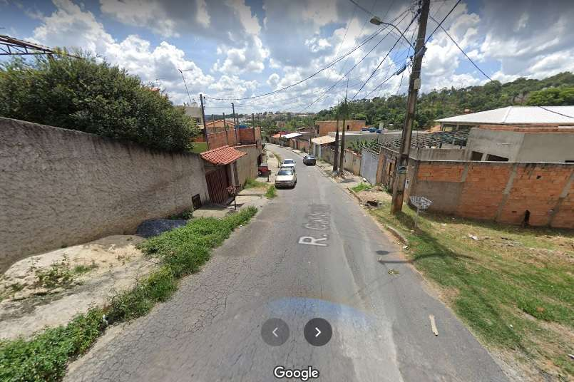

Jovem é morto em possível acerto de contas do tráfico de drogas em Vespasiano

Um jovem de 20 anos foi morto com cinco tiros em um possível acerto do tráfico de drogas em Vespasiano, na região metropolitana de Belo Horizonte. O crime aconteceu na madrugada deste domingo, no bairro Gávea.
Ver mais
Por THAÍS MOTA
Dom, 14/03/21 - 14h20.
Homem é preso suspeito de roubar gado em fazenda de Vespasiano, na Grande BH
A polícia prendeu um homem suspeito de furtar vacas e bezerros de uma fazenda em Vespasiano, na Região Metropolitana de Belo Horizonte. O crime foi na noite desta quarta-feira (27).
Ver mais
Por Guilherme Pimenta, G1 Minas — Belo Horizonte
28/01/2021 05h49 Atualizado há 2 meses.